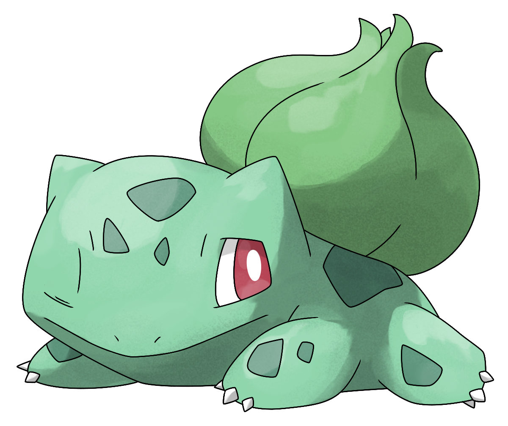

Bulbasaur Best Saur
We would love to hear from you!
Please contact us on one of our many platforms!
Email: stanbulbasaur@gmail.com
A Quick Description
Known as the Seed Pokémon,
Bulbasaur resembles a small, squating dinosaur that walks on four legs and has a large plant bulb on its back.
It also has large red eyes and very sharp teeth. Its skin is a light turquoise color with dark green spots.
Its most notable feature, however, is the aforementioned bulb on its back, which as the Pokédex states, was planted on it at birth.
Bulbasaurs have "bulbs" on their backs that grow steadily larger as the Bulbasaur matures.
This bulb contains a seed which uses photosynthesis to supply Bulbasaur with energy
Its bulb is also used to store the energy which the seed absorbs, which can be used when it is necessary.
It is assumed that when a Bulbasaur collects enough energy in its bulb, it will evolve into an Ivysaur.
As Bulbasaur is a starter Pokémon, it is hard to locate, however, it could be found near streams.
